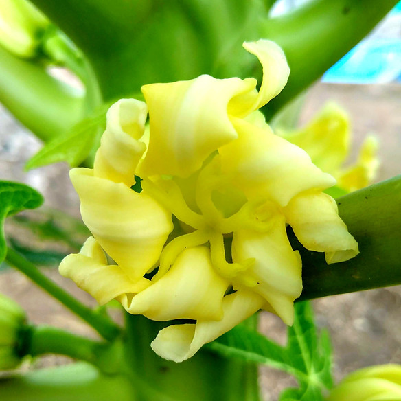
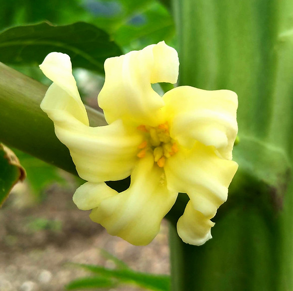
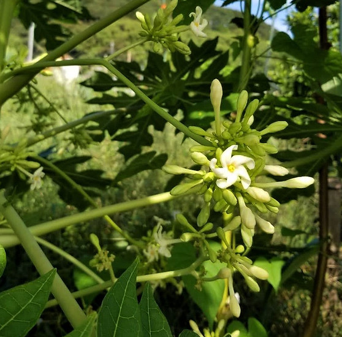
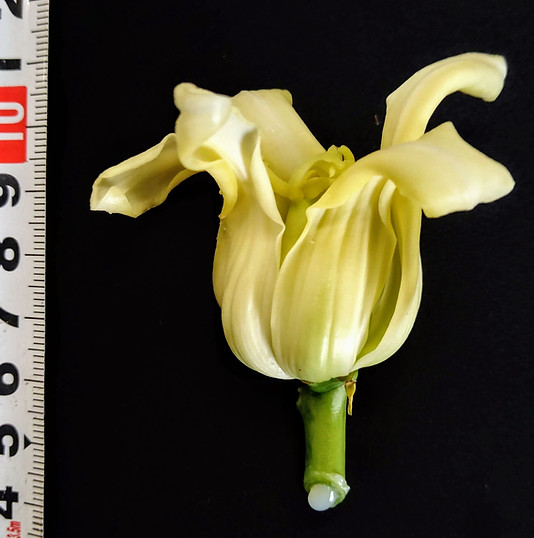
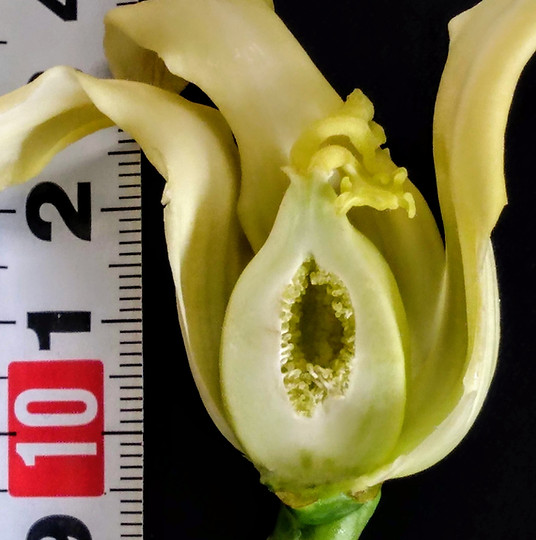
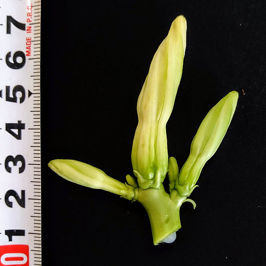
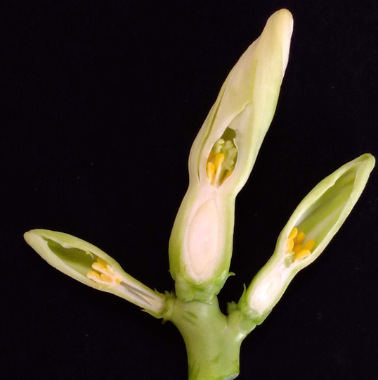
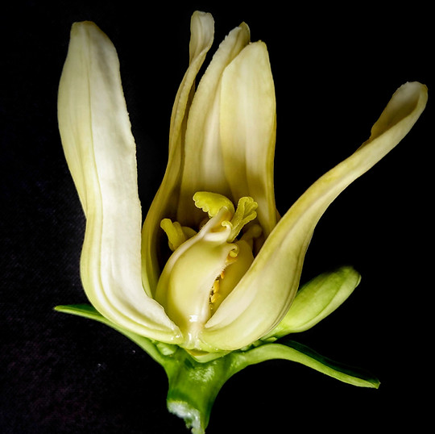
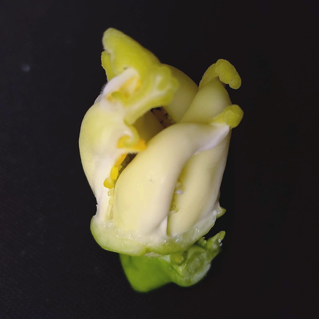

植物生理と生態
パパイヤという植物は知れば知るほど興味が湧く、非常にユニークな特性を持っています。栽培していると気付く不思議な現象も知れば納得です。
パパイヤの果実を見ていると気づくことがあります。それは花の形の違いや果実の形の違いです。
花は細長く花粉のあるもの、丸く雌しべの形が広がっているものと、それぞれ株によって異なります。
果実の形状も、丸い ものから、パパイヤで見慣れた洋ナシ形、ヘチマの様に細長いのもあります。
きっと品種による違いと思われるかもしれませんが、同じ品種を数本植えた場合でも、株ごとに花や果実の形が違うことがあります。果実形状はパパイヤの性別と環境によって大きく形を変えます。
パパイヤの花

雄しべと花粉が無く柱頭が大きく裂開しているのが特徴。

雌しべの周りに雄しべがあり、花粉が見えます。

長く伸びた花柄に複数の小さな花をたくさん咲かせます。
パパイヤは元来雌雄別性の植物で、雌性の株に実を着けるためには雄性株(雄花の花粉)が必要です。
しかし種の状態で雌雄の判別がつかない為、過去には1か所に複数苗を植え、花を見て不要な雄株を間引きする生産を行っていました。その生産性の悪さを解消するため両性(両全性)品種が生まれました。
両性品種には雄性は存在せず、両性もしくは雌性となりいずれにも実がなります。
これにより世界のパパイヤ生産の中心は両性品種へと切り替わりました。
当初は区別するためSolo品種と呼ばれ、当時は品種名にもSolo～と表記していました。
正常花と異常花


雌花は通常、全長4～5㎝の花をつけます。外観は丸く果実になる子房と一体となっています(上位子房型)。
雌しべは5つの心皮が側面で合成し中空の果実を作ります(断面は星形に)。
子房内壁には多数の胚珠(種になる部分)を見ることが出来ます。


両性花は通常全長5～6㎝の花をつけます。雌花が丸形なのに対し、細長い蕾が特徴的です。
正常な雄しべの数は5本2組、雌しべの心皮数は５ですが、花芽分化時の気温によって数が変異することが分かっています。
画像左のつぼみは雌しべが無く雄花化(雄性化)しています


通常5つの心皮が合成して雌しべを形成しますが、この花は心皮が癒合しないまま成長しており、これでは果実はなりません。
花芽分化の際に気温差が極端に大きいとこのような奇形が発生します。発見次第摘果します。
パパイヤを栽培する上で性別が果実にどう影響しているかを知ることは、決してムダではありません。
特に両性品種が主流となって以来、同じ品種の中に雌株と両性株が存在することは知っておかなければなりません。
例えば「同じ品種を3本植える家庭菜園」「同じ品種を100本植える営利栽培農家」がいたとします。いずれの場合も理論上1:2の割合で雌性：両性を混植することとなります。同じ品種なのに性別の差が花形の差、果実形状の差となることを知っておきましょう。
特に両性は温度による影響で変異を起こしやすく、本州栽培では4~5月の低温、8月の高温で形状が乱れることがしばしば起こります。これについては次の項目で詳しく説明しています。
パパイヤの果実

丸型が特徴的、１本植えの場合は単為結果するため種無しに。

洋ナシ形から円柱型縦に長くなる果実が特徴的。

両性株の奇形果実(心皮癒合が不完全なまま肥大している)
パパイヤの果実形状はその性の違いからそれぞれ違った形になります。相対的に雌性は丸く、両性は縦方向に長くなります。
- 雌性：球形・卵型・洋ナシ形
- 両性：卵型・洋ナシ形・うりざね型・紡錘型・円筒形
特に両性品種は花芽分化のタイミングで気温の影響による変異が起きやすく、低温期の花芽分化ではリム(溝)の深い卵型となり、高温期の花芽分化では縦方向に伸び、ヘチマのような細長く曲がった果実が出来ることもあります。
(パパイヤの花芽分化から開花までの日数は45日～90日と言われています)
パパイヤの性
現在流通しているパパイヤの多くは「両性のF1品種」
両性品種はなぜこんなにも不安定なのでしょう？
両性パパイヤは、本来雄になるためのY染色体が変異したYh染色体による両全性変異です。
このYh染色体は非常に不安定な遺伝子であることが知られています、前項の通り温度による影響を受けやすく、心皮数が変異し雌しべの形状が乱れたり、雌しべが退化し雄花化を起こしたりします。結実の確実性は雌株に劣ると言えるかもしれません。
これだけ聞くと両性は栽培者にとって不利に思えますが、あくまでも極端な環境によって起きる事象。
両性株から得られる縦長の果実はピーラー加工のしやすさや、重量ボリュームから、フルーツでも野菜でも加工原料として高い需要があります。
近年中国のパパイヤ生産地では、植物ホルモン処理による両性果実の大型化が体系的に取り入れられています。
両性品種には雄の種が存在しません。雄花を見る機会も無いと思われますが、どうして雄の種は存在しないのでしょう？
それは遺伝によるものですが、より理解を深めるため両性F1種子の採種方法から説明します。
- 採種は両性の固定系統同士で行われています。
- 交配方法は一般的な野菜のF1採種と同様、母とする系統の雄しべを取り除き（除雄）、父方の系統の花粉を交配させます。この際他の花粉が付かないよう、虫の入らないハウスで栽培し、交配作業前後は常に花に袋をかけます。
- 得られる種は遺伝法則上 1雌:2両性:1雄 となりますが、雄性は致死遺伝子として働くため、種にはなりません。結果、両性同士の交配で得られた種に雄は存在しません。
- 便宜上両性種子からなる木を「両性株」花を「両性花」雌性種子からなる木を「雌株」花を「雌花」と呼びます。
- 両性花は自花受粉し着果します。
- 雌花は両性花の花粉による自然交配に加えて、単為結果により着果します。つまり1本でも果実はなります。しかし単為結果性には品種間差があるため、雌株1本の場合100%の着果は望めません。
アジア圏では雄株に着果させる「性転換」手法が存在します
株もとに杭や釘を貫通させる方法、これって本当なの？
定植から3~5年栽培を継続するアジア圏では、実のならない雄株に杭などを打ち込み、外部刺激を与えることで数年後に実がなるとされており「南北方向に貫通させる」や「東西に」「十字に」など、まじないめいた手法が多数存在します。不思議なことに実際に実がなった例がいくつもあり、WEBでも特徴のある雄花の先に垂れ下がる果実の画像を確認することが出来ます。
この事象について、植物体の中で何が作用しているのでしょうか？刺激によるホルモン分泌？
残念ながら研究者はいないようで、論文や文献も見当たりません。
想像ですが、刺激による変異よりも環境要因による両性変異と考えるのが自然かと思われます。
青パパイヤには病虫害・獣害がない？
青パパイヤ栽培が注目された大きな要因の一つに目立った病虫害が無い・獣害を受けないの2点があげられます、ホントでしょうか？
【病害・虫害】
まったく無いわけではありません、定植直後は周辺の植物からスリップスやアブラムシが飛来し影響を与えることがあります。
近くに病気の作物があれば罹病する可能性もあります。
長期間の過度な乾燥では葉ダニやうどん粉病が発生することがあります。
【獣害】
獣害の発生している中山間地を中心に、すでに導入されている農家や団体の情報では無害との報告が多く、既存の動物が興味を示さないと言われています。
青パパイヤの果実表面や葉茎などを傷つけると、乳白色のラテックスを分泌します。空気に触れると固まることから、傷からの害虫や病原菌の侵入を防ぐ役割を持つと考えられます。このラテックスこそが「パパイン酵素」です。収穫から5~6日経過すると傷をつけても出なくなり、果実が完熟に向かうにつれ出なくなります。
農業生物資源研究所の試験(2004年発表)ではこのラテックスに含まれる酵素「システインプロテアーゼ」が耐虫性防御物質とし機能していることが明らかになっています。
一方で野生動物が避ける現象については研究者がいない為判明していません。
このラテックスは無毒ですが、肌の弱い方には刺激の原因になることから、収穫作業には必ず手袋をご使用ください。
※ラテックスアレルギーの方は特にご注意ください。